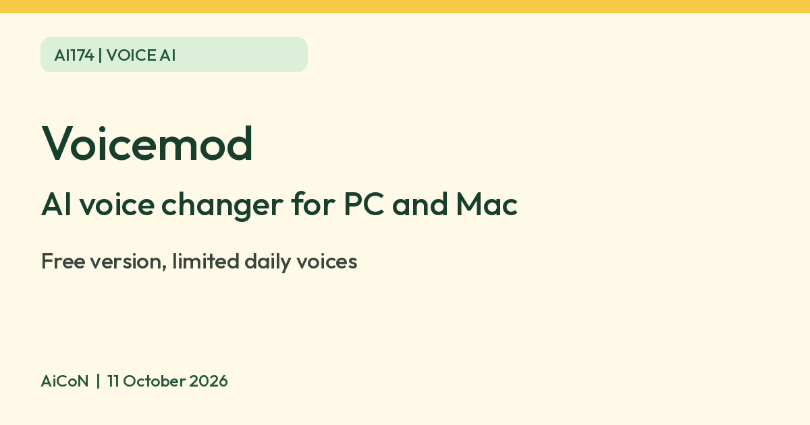

Voicemod: free AI voice changer, with a daily voice rotation
Voicemod has a free version of its AI voice changer for Windows and Mac. Free users get a limited daily rotation of voices and one soundboard.

What it is
Voicemod is a real-time voice changer. Its help pages say it works on Windows and Mac, inside voice chats and games such as Discord, Zoom, Roblox and Fortnite, and has a soundboard for playing sound clips during a call. Voicemod describes its AI voices as filters powered by machine learning and professional voice actor data. A Voicemod Soundboard app for iOS and Android can trigger sounds remotely.
Is it free
Yes, with limits. Voicemod's help page lists a Free version and a PRO version. Free has a limited daily rotation of voices, one soundboard and some content packs. Voicemod says a user without PRO should have a single AI voice in the daily free rotation. VoiceLab, where you build your own voice, is PRO only. PRO unlocks its PRO voice library and unlimited soundboards; extra premium store packs are sold separately and are not included in PRO. We did not verify a current Indian rupee checkout total or renewal offer, so none is quoted. Check the exact plan, tax, renewal and refund terms before paying; free does not mean every voice or content pack is unlocked.
Is it available in India
We could not confirm this. Voicemod's pages do not list countries.
What you need
- Windows 10 (build 1607 or later) or Windows 11, 64-bit, or macOS Ventura 13 or later with AVX2 support.
- The detailed requirements table lists 8 GB RAM minimum and 16 GB recommended, but the same page's short summary says 4 GB/8 GB. That conflict is unresolved. Use the stricter table as a planning guide, check your exact CPU/device, and test before buying; Windows AI voices also require AVX2 support according to the help page.
- An internet connection, and a login through Google, Discord, Twitch, Apple or email.
Privacy before using your microphone
Voicemod's general privacy policy expressly includes the desktop apps. It says it does not listen to conversations when you use real-time voice-changing features, or listen to recordings provided for AI voice creation. The desktop section lists behavioural information about service use; the broader policy also covers account/social-login details, diagnostics, performance data, usage and purchase history.
Separate improvement projects using voice samples require active opt-in, according to the policy, and the samples are anonymised as soon as collected. Do not treat choosing a voice filter as permission to join a voice-data project; read any separate consent screen before agreeing.
The policy allows processing by cloud/analytics vendors such as Google and AWS and outside your home country. It gives general purpose-based retention with legal exceptions, not a fixed desktop voice-data deletion period. It offers access, correction, deletion, objection and consent-withdrawal rights through its privacy contact form, including for users outside the EU.
We did not verify the desktop app's network traffic or obtain a blanket promise that every desktop audio feature is local-only or never stores audio. The local-processing claims for other mobile products, and the homepage's specific Snapdragon X Elite on-device workload claim, should not be extended to all desktop setups. Use only sounds/voices you have permission to use, review microphone permissions and any recording/replay or community-sharing feature, and avoid confidential calls until you are comfortable with the settings.
How to try it
- Download from the official Voicemod site, check your exact device requirements and sign in.
- In Voicemod, choose your physical microphone for input and headphones for output. Headphones help avoid feedback.
- Keep Voicemod open. In the target chat/game, choose Voicemod Virtual Microphone as input and your headphones as output. Do not choose the virtual microphone as your output device.
- Try an available free voice in a private test before a live call. Check sound levels, intelligibility and the selected microphone. Restore your normal microphone when you stop using voice effects.
Limits to know
- Voicemod says its AI voices were built with English-speaking actors, so English gives the best results and other languages may struggle.
- Voicemod says the AI voices may have issues on low-power computers.
- Do not use a changed voice to pretend to be someone else, or to trick a person on a call. That advice is from AiCoN.
- The policy says users must be at least 16. Users below legal adulthood should review the policy and terms with a parent or guardian.
- We did not install the app, sign in, send audio, purchase PRO or test performance. The target chat/game has its own data and recording policies; changing your voice does not make a call anonymous.
Frequently asked questions
Is Voicemod free?
There is a free version with a limited daily rotation of voices and one soundboard. Voicemod says a free user should have one AI voice in the daily rotation. Full voices need PRO.
Does the mobile local-processing claim cover my PC?
No. Product-specific mobile claims are not a blanket desktop guarantee. The general policy says it does not listen to real-time conversations, while collecting account, usage and diagnostic data; separate voice-sample improvement projects require opt-in.
Can I use it without telling people?
A playful filter is different from impersonation. Tell people when a changed voice could mislead them, and get permission before recording or sharing their voices.
Sources: Voicemod Free vs PRO, Voicemod system requirements, Voicemod AI voices help, Voicemod privacy policy, Voicemod desktop setup guide. Checked 11 October 2026.